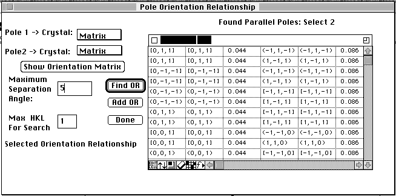
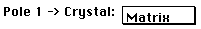
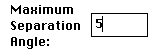
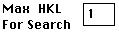
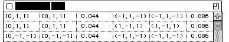

Distributed By: Virtual Labs
Pole Orientation Relationship Dialog Box
PATH...{Stereographic Projection Object}:Pole Figures:Find OR For
2 Poles<The user must then select 2 unrelated experimental poles using
a shift-click and then a click on the respective pole>
Desktop supplies an easy method for quick determination of an orientation
relationship between two known crystals. It requires a zone axis from each
crystal and the rotation between these two axis. Use the SAD
object to set the two zone axes then use the Pole Orientation Relationship
to calculate an exhaustive list of potential relationships.

 These Crystal Popup Menus let the user know
which crystal is associated with each spot. The user has no control over
these buttons. However, the values may change of an Orientation Relationship
is added to the list under the following rules:
- If, there is no matrix crystal. The first crystal is selected to
be the matrix crystal. The crystal data for this experimental pole is copied
into the matrix crystal and the orientation relationship is determined with
this as the matrix crystal.
If, they are both matrix crystals. The second crystal is selected to be
the first precipitate crystal. The crystal data for this experimental
pole is copied into the first precipitate crystal and the orientation relationship
is determined with this as the first precipitate crystal.
This brings up the Orientation
Matrix Dialog Box. However, this activation of the Orientation
Matrix Dialog Box is different that the other activations. The Matrices
which are displayed given the relationship between the two crystals based
on the second crystal. The values are determined by taking the Inverse
roataion matrix for the first crystal, multiply it by the second crystal's
rotation matrix, then display the values with respect to the second crystal.
 This box allows the user to allow a wider margin of
difference between the two crystal's poles. (The way orientation relationship's
are calculated is by generating plane and direction stereograms for each
crystal and then finding all poles for each crystal within X° of each
other.)
This sets the size of the stereograms calculated. A
value of 2 would generate stereograms from -2-2-2 to 222 for each crystal.
 This is a standard Text
Table object that displays all found potential orientation relationships.
Select a cell selects an orientation relationship which is displayed under:
To set this orientation into Desktop Microscopist for additional calculations
click the .
When finished with the Dialog simply click the Done button.
Author: J.ames T.
Stanley
 Desktop
Manual:Dialog Boxes
Desktop
Manual:Dialog Boxes
Distributed By: Virtual Labs
Last Updated:1/12/96 Sat, Apr 27, 1996